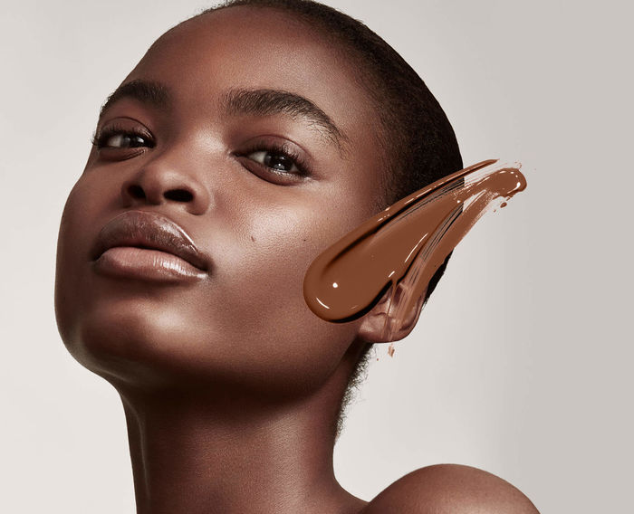

Fenty INC.: Rihanna emprendedora
Cuando la gente afirma que los artistas no hacen dinero con sus albumes, están en lo cierto. Las visitas de youtube, Itunes o spotify tampoco dan mucho dinero, el beneficio está en las giras musicales. Para aumentar su patrimonio, Rihanna ha dado un paso más y ha creado su propia compañía de productos de belleza, Fenty Beauty, gozando de éxito y reconocimiento. El punto fuerte de Fenty Beauty es la diversidad que ofrece para muchísimos tonos de piel, tanto ha sido su impacto, que muchas marcas mucho mas antiguas estan empezando a sacar líneas de productos similares.

Rihanna no ha sido ni será la primera ni la última persona famosa tratando de vendernos algo, incluso Britney Spears sacó su propio vodka, pero hay algo diferente, este producto ha hecho reaccionar a sus competidores y ha ofrecido algo nuevo y de calidad a sus compradores. Rihanna además tiene mucho control creativo y ejecutivo sobre esta empresa, tras esta gran aventura, se ha quedado con ganas de más. Una marca llamada "Fenty Estates Wine and Spirits Co", una empresa de vinos y licores, fue registrada en Estados Unidos este pasado septiembre, y, aunque producida por una empresa inusual, nadie ha negado ni confirmado que pertenezca a la artista.
House Of Fenty, una marca de lociones y champús también fue registrada durante las mismas fechas sin confirmación sobre su origen. Dada la afición al vino y a los licores exclusivos de Riri, los cuales menciona incluso en sus canciones, no nos extrañaría si estas marcas verdaderamente son suyas, pero no podemos afirmar que lo sean con completa seguridad.
Fenty curiosamente tuvo en el pasado graves problemas con su contable, este hombre abusó de su confianza para robarle dinero y para hacerla invertir en cosas en las que perdería su dinero, llevandola a la deuda. Afortunadamente, Rihanna se recuperó, dedicandole la apropiadamente titulada canción Bitch Better Have My Money. El evento impacto mucho a la artista, nos alegramos mucho de que haya conseguido encontrar buenas inversiones tras años de mala gestión que asi le cuestan su carrera musical.